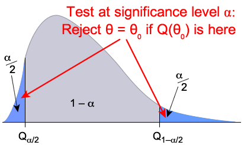

The ideas of test statistics and pivots are very closely related.
If a function \(g(X_1, \dots, X_n, \theta)\) can be used as a pivot for \(\theta\), then \(g(X_1, \dots, X_n, \theta_0)\) can be used as a test statistic for testing whether \(\theta = \theta_0\).
To simplify the notation, we simply write \(Q(\theta) \sim \mathcal{Standard\;distn}\).
Relationship between confidence interval and test
These are also closely related. The diagram below illustrates a possible standard distribution for \(Q(\theta) \sim \mathcal{Standard\;distn}\).

Because of this relationship between confidence intervals and tests, we can perform a hypothesis test from a confidence interval.
Test from confidence interval
If we reject the null hypothesis in a 2-tailed test about whether \(\theta = \theta_0\) when the parameter value \(\theta_0\) is outside a \((1 - \alpha)\) confidence interval for \(\theta\), then the test has significance level \(\alpha\).
Similarly, we can find a confidence interval based on a hypothesis test.
Confidence interval from test
A \((1 - \alpha)\) confidence interval can be found as the values \(\theta_0\) that are not rejected by a 2-tailed test of whether \(\theta = \theta_0\) at significance level \(\alpha\).